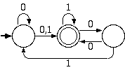
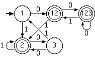
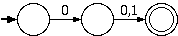
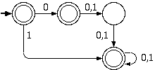
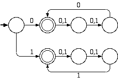
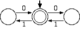

Consider the following NFA over the alphabet {0,1}:


[0+(0+1)(1+00)*01]*(0+1)(1+00)*
A -> 0A | 0B | 1B
B -> 1B | 0C | e
C -> 0B | 1A
Draw a finite state machine that accepts the complement of the language accepted by the non-deterministic machine below:
answer:

Determine and prove for each set below whether it is Regular or not. Be careful.
REGULAR. This language can be accepted by the following NFA:

NOT REGULAR by the pumping lemma. Let p be the pumping length and consider the string s=1p0p12p. Now we try to break it up into s=xyz. Since |xy|<=p and |y|>0, y can only contain 1s. When we pump the string once we get xy2z = 1p+|y|0p12p which is not in the language. This contradicts the pumping lemma, so the language is not regular.
REGULAR. This language can be accepted by the following NFA:

Determine whether Regular sets are closed under each of the operations below. Prove your answers by an explanation and/or example or counterexample.
CLOSED Even(L) is just the intersection of L with a DFA which accepts strings of even length. Since L and this DFA are both regular, and regular sets are closed under intersection, regular sets must also be closed under Even.
NOT CLOSED by counterexample. Consider the language A = 0*1. Triple(A) has the form 0n10n10n1 where n>=0. If we assume pumping length p and try to pump the string s=0p10p10p1 which is in this language, we get s=0p+|y|10p10p1 which is not. Since A is regular and Triple(A) is not, the set of regular languages is not closed under Triple.
Give a decision algorithm to determine whether a regular language L1 has one or more strings in common with the language described by the regular expression [00 + 11 + (01 + 10)(00 + 11)*(01 + 10)]*.